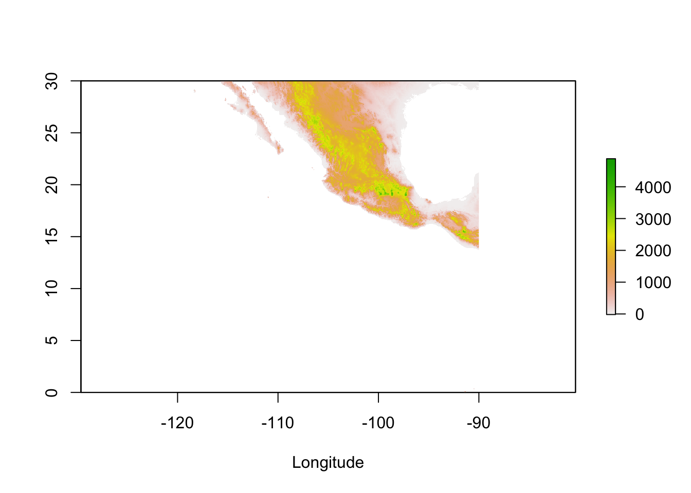
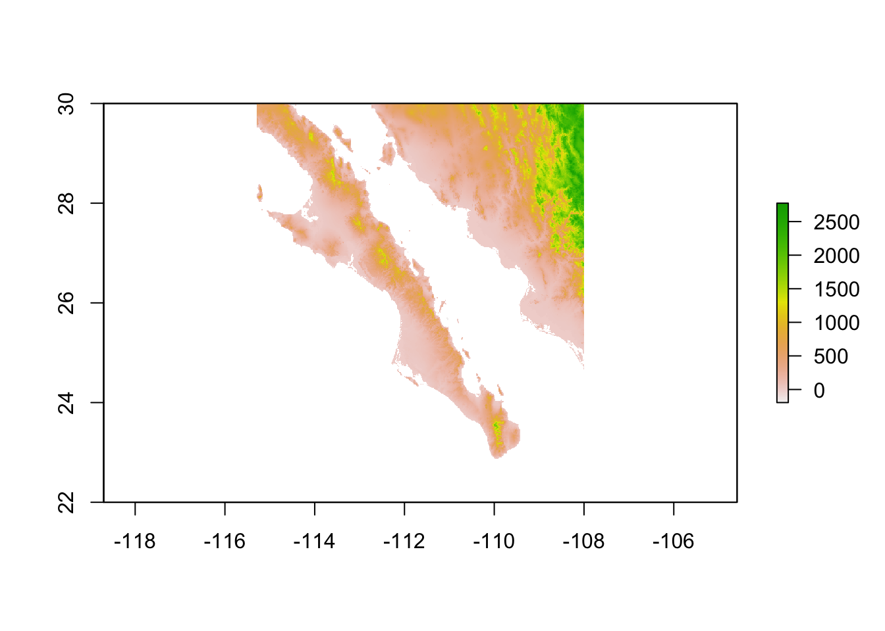
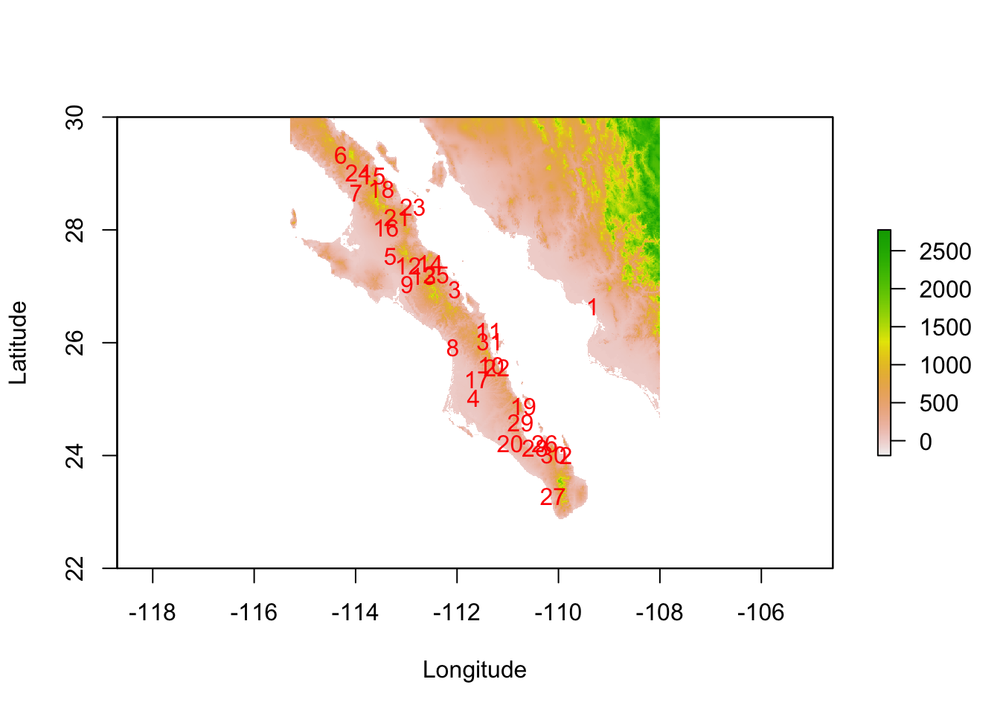
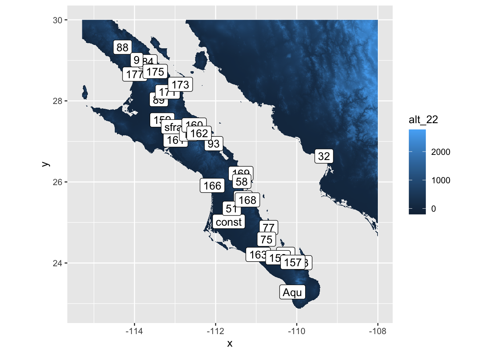
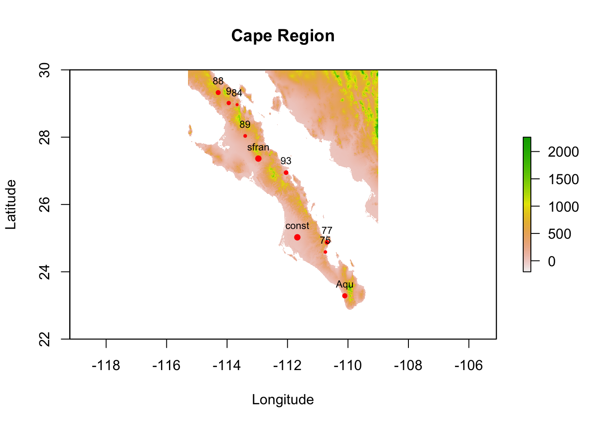
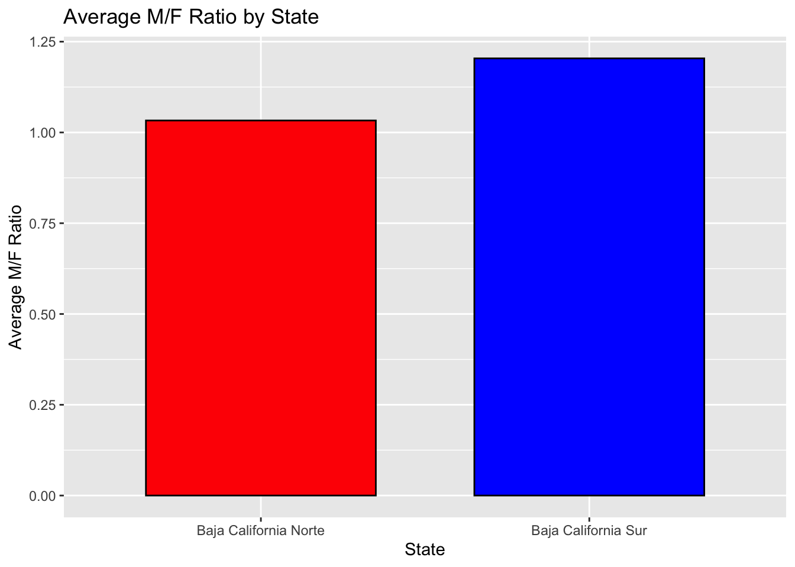
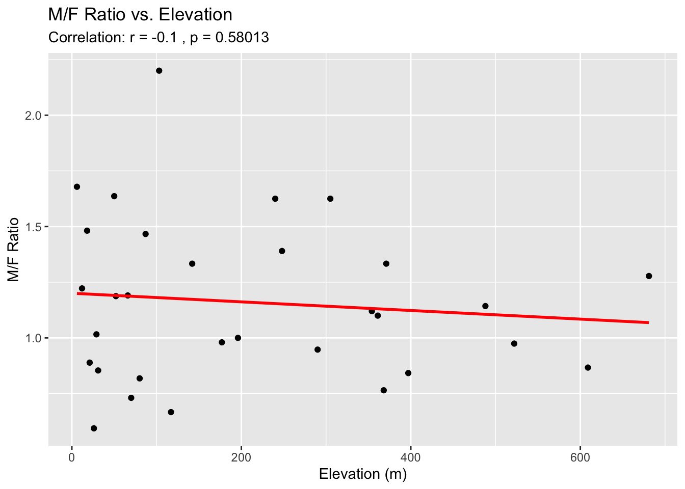

#Load in Packages
library(tidyverse)
library(raster)
library(sf)
library(ggrepel)
raster_url <- "https://github.com/DyerlabTeaching/Raster-Data/raw/main/data/alt_22.tif"
beetle_url <- "https://raw.githubusercontent.com/DyerlabTeaching/Raster-Data/main/data/AraptusDispersalBias.csv"Data and Loaded Packages
Running Code
- Load the raster and point data in and crop to an appropriate size to display the locations of the sampling plots and make a label for each site.
elev <- raster( raster_url )
read_csv( beetle_url ) %>%
st_as_sf( coords = c("Longitude","Latitude"),
crs = 4326 ) -> beetles
plot( elev, xlab="Longitude" )
beetles %>%
st_union() %>%
st_buffer( dist = 1 ) %>%
st_bbox() xmin ymin xmax ymax
-114.29354 23.28549 -109.32699 29.32542 baja_extent <- extent( c(-115.29354,-108,22,30))
baja_elev <- crop( elev, baja_extent )
baja_elevclass : RasterLayer
dimensions : 960, 875, 840000 (nrow, ncol, ncell)
resolution : 0.008333333, 0.008333333 (x, y)
extent : -115.2917, -108, 22, 30 (xmin, xmax, ymin, ymax)
crs : +proj=longlat +datum=WGS84 +no_defs
source : memory
names : alt_22
values : -202, 2774 (min, max)plot( baja_elev) 
plot( baja_elev, xlab="Longitude", ylab="Latitude")
text( beetles, add=TRUE, pch=16, col="red" )
baja_elev %>%
rasterToPoints() %>%
as.data.frame() %>%
ggplot() +
geom_raster( aes(x,y,fill=alt_22) ) +
geom_sf_label( aes(label=Site),
data = beetles) +
coord_equal()
- Use the click() function to crop the raster and filter the sites to include only the region that is on the peninsula of Baja California. Plot the raster and sites as labels.
cape_bound <- c(-116, -109, 22, 30)
cape_ex <- extent(cape_bound)
# Crop the raster to the Cape region
cropped_rast <- crop(baja_elev, cape_ex)
# Filter for beetle sites south of Site #75
cape_pts <- beetles %>% filter(Site >= 75)
# Ensure 'cape_points' is an sf object and contains coordinates
if (!inherits(cape_pts, "sf")) {
cape_pts <- st_as_sf(cape_pts, coords = c("Longitude", "Latitude"), crs = 4326)
}
# Plot the raster for the Cape region
plot(cropped_rast, xlab = "Longitude", ylab = "Latitude", main = "Cape Region")
max_mfratio <- max(cape_pts$MFRatio, na.rm = TRUE)
scaled_cex <- cape_pts$MFRatio / max_mfratio
scaled_cex[is.na(scaled_cex)] <- 1
plot(cape_pts, add = TRUE, col = "red", pch = 16, cex = scaled_cex)Warning in plot.sf(cape_pts, add = TRUE, col = "red", pch = 16, cex =
scaled_cex): ignoring all but the first attributetext(st_coordinates(cape_pts), labels = cape_pts$Site, pos = 3, cex = 0.7)
- The peninsula of Baja California is divided into the States of Baja California Norte and Baja California Sur. The border between these states is at 28° Latitude. Divide the sample locations into groups based upon which state they are located and plot the average sex ratio of the sample sites partitioned by each site.
beetles <- beetles %>%
mutate(
Latitude = st_coordinates(beetles)[, 2],
State = case_when(
Latitude > 28 ~ "Baja California Norte",
TRUE ~ "Baja California Sur"
)
)
# Calculate average M/F ratio by state
state_avg_sex_ratio <- beetles %>%
group_by(State) %>%
summarize(AverageMFRatio = mean(MFRatio, na.rm = TRUE))
# Bar ggplot for average M/F ratio by state
ggplot(state_avg_sex_ratio, aes(x = State,
y = AverageMFRatio,
fill = State)) +
geom_bar(stat = "identity",
color = "black", width = 0.7) +
labs(title = "Average M/F Ratio by State",
y = "Average M/F Ratio",
x = "State") +
scale_fill_manual(values = c("red", "blue")) +
theme(legend.position = "none")
- Is there a relationship between the observed sex ratio and the elevation at that site? Plot these, and in the text, perform a correlation test (cor.test()) and report the values as if you were writing them up in a results section.
# Extract elevation values at each sampling location
elevation_v <- raster::extract(cropped_rast, beetles)
beetles <- beetles %>% mutate(Elevation = elevation_v)
# Correlation test between MFRatio and Elevation
cor_test <- cor.test(beetles$MFRatio, beetles$Elevation, method = "pearson")
# Scatter plot
ggplot(beetles, aes(x = Elevation, y = MFRatio)) +
geom_point() +
geom_smooth(method = "lm", color = "red", size = 1, se = FALSE) +
labs(
title = "M/F Ratio vs. Elevation",
x = "Elevation (m)",
y = "M/F Ratio",
subtitle = paste("Correlation: r =", round(cor_test$estimate, 2), ", p =", format.pval(cor_test$p.value))
) +
theme() 
# Print correlation test results
cat("The correlation between M/F ratio and elevation was r =", round(cor_test$estimate, 2), ", p =", cor_test$p.value, "\n")The correlation between M/F ratio and elevation was r = -0.1 , p = 0.5801259 A Pearson correlation analysis was conducted to examine the relationship between the male-to-female (M/F) ratio and elevation.
The results indicated a very weak negative correlation (r = -0.10), which was not statistically significant (p = 0.58). This implies that there is no meaningful linear relationship between the M/F ratio and elevation within this data set. Given the lack of statistical significance, it is unlikely that elevation is a significant factor influencing the M/F ratio in the current sample. Further studies with larger sample sizes or different analytical methods may be necessary to investigate this relationship more thoroughly.